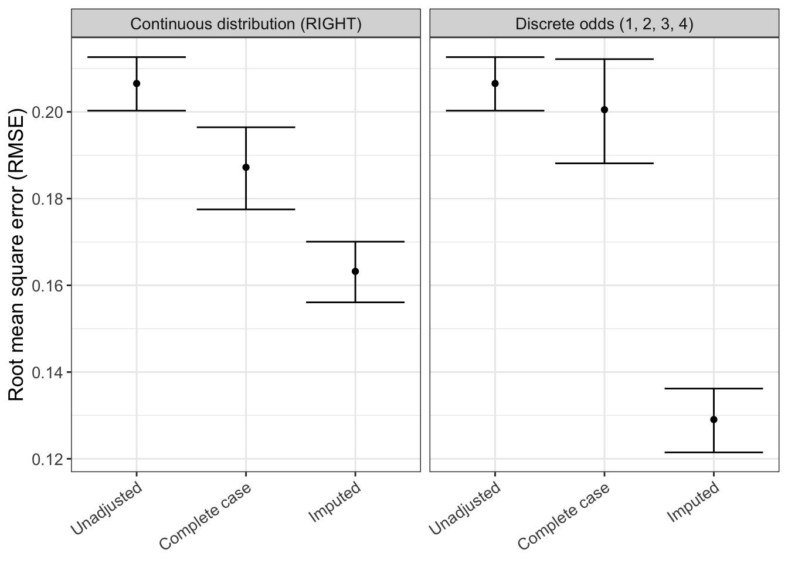
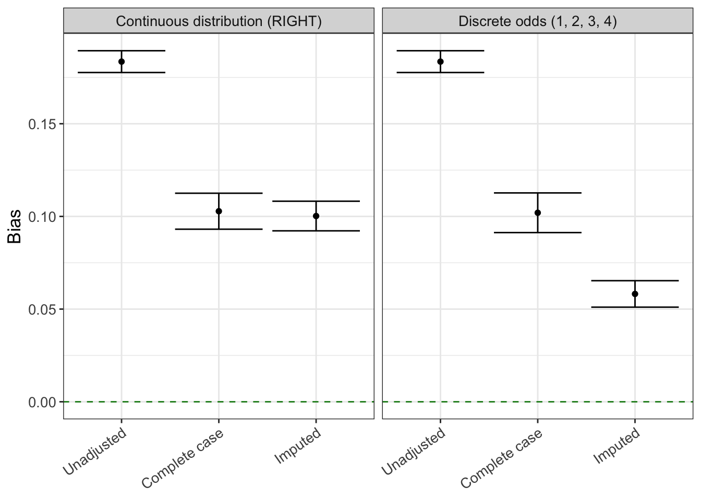

# define column numbers for pattern and weight determination
col_Z2 <- which(colnames(mock_cohort) %in% "Z2")
col_U <- which(colnames(mock_cohort) %in% "U")
# define missingness pattern
default_pattern <- rep(1, ncol(mock_cohort))
pattern <- replace(default_pattern, col_Z2, 0)
# define weights
default_weights <- rep(0, ncol(mock_cohort))
weights <- replace(default_weights, c(col_Z2, col_U), c(0.2, 0.8))
prop <- 0.53 Simulation script
Simulate different scenarios and missingness mitigation approaches
3.1 Objective
In this section, we will generate 2 following different missingness scenarios.
3.2 Continuous distribution probabilities
Probabilities are based on a continuous distribution.
tic(msg = "Simulation based on continuous distribution")
results <- parallel::mclapply(
X = 1:n_replicates,
FUN = run_simulation,
pattern = pattern,
weights = weights,
type = "RIGHT",
prop = prop,
mc.cores = parallel::detectCores()-1
)
results_cont <- do.call(rbind, results) |>
mutate(simulation = "Continuous distribution (RIGHT)")
toc()Simulation based on continuous distribution: 4.36 sec elapsed3.3 Discrete distribution probabilities
Probabilities are based on a discrete distribution.
tic(msg = "Simulation based on discrete distribution")
odds <- c(1, 2, 3, 4)
results <- parallel::mclapply(
X = 1:n_replicates,
FUN = run_simulation,
pattern = pattern,
weights = weights,
odds = odds,
prop = prop,
mc.cores = parallel::detectCores()-1
)
results_odds <- do.call(rbind, results) |>
mutate(simulation = paste0("Discrete odds (", paste0(odds, collapse = ", "), ")"))
toc()Simulation based on discrete distribution: 4.322 sec elapsed3.4 Save simulation results
results <- rbind(results_cont, results_odds) |>
mutate(method = factor(method, levels = c(
"Unadjusted",
"Complete case",
"Imputed"))
)3.5 Results
The next steps of this script analyze the raw simulation results obtained in the previous script via run_simulation.R. The last run on 2024-10-14 18:48:04.145984.
3.6 Read raw results table
We first look at the results table with the raw simulation results.
results |>
glimpse()Rows: 12
Columns: 5
$ method <fct> Unadjusted, Complete case, Imputed, Unadjusted, Complete ca…
$ estimate <dbl> 1.2629630, 0.8932111, 0.9111699, 1.1150121, 0.8824297, 1.03…
$ se <dbl> 0.07923421, 0.13274238, 0.10924959, 0.07479571, 0.11677905,…
$ replicate <int> 1, 1, 1, 2, 2, 2, 1, 1, 1, 2, 2, 2
$ simulation <chr> "Continuous distribution (RIGHT)", "Continuous distribution…3.7 QC
Let’s do a few quality/sanity checks.
- Number of analysis methods
unique(results$method)[1] Unadjusted Complete case Imputed
Levels: Unadjusted Complete case Imputed- Assert that there are no missing results
assert_that(!any(sapply(results$estimate, is.na)), msg = "There are missing estimates")[1] TRUEassert_that(!any(sapply(results$se, is.na)), msg = "There are missing standard errors")[1] TRUE3.8 Main results
# call helper functions
source(here::here("functions", "rsimsum_ggplot.R"))For the analysis of aggregate simulation results we use the rsimsum package. More information about this package can be found here.[@rsimsum]
simsum_out <- simsum(
data = results,
estvarname = "estimate",
se = "se",
true = 1,
by = "simulation",
methodvar = "method",
ref = "Complete case"
) |>
summary() |>
tidy()hr_distribution <- results |>
ggplot(aes(x = method, y = estimate)) +
geom_boxplot(outlier.colour = "red") +
geom_point(position = position_jitter(seed = 42), alpha = 0.15) +
geom_hline(yintercept = 1.0, color = "forestgreen", linetype = "dashed") +
labs(
x = "Method",
y = "Hazard ratio (HR)"
) +
theme_bw() +
theme(
axis.title.x = element_blank(),
axis.text.x = element_text(angle = 35, vjust = 1, hjust=1)
) +
facet_wrap(~simulation)
hr_distribution
ggplotly(hr_distribution)3.8.1 Root mean squared error (RMSE)
rmse <- rsimsum_ggplot(tidy_simsum = simsum_out, metric = "rmse")Warning: There were 2 warnings in `dplyr::mutate()`.
The first warning was:
ℹ In argument: `lower = sqrt(lower)`.
ℹ In group 1: `simulation = "Continuous distribution (RIGHT)"`.
Caused by warning in `sqrt()`:
! NaNs produced
ℹ Run `dplyr::last_dplyr_warnings()` to see the 1 remaining warning.rmse$plot

rmse$table |>
gt()| method | est | lower | upper |
|---|---|---|---|
| Continuous distribution (RIGHT) | |||
| Unadjusted | 0.203 | NaN | 0.310 |
| Complete case | 0.112 | 0.101 | 0.122 |
| Imputed | 0.067 | NaN | 0.106 |
| Discrete odds (1, 2, 3, 4) | |||
| Unadjusted | 0.203 | NaN | 0.310 |
| Complete case | 0.138 | 0.104 | 0.165 |
| Imputed | 0.072 | 0.055 | 0.085 |
3.8.2 Bias
bias <- rsimsum_ggplot(tidy_simsum = simsum_out, metric = "bias")bias$plot

bias$table |>
gt()| method | est | lower | upper |
|---|---|---|---|
| Continuous distribution (RIGHT) | |||
| Unadjusted | 0.189 | 0.044 | 0.334 |
| Complete case | -0.112 | -0.123 | -0.102 |
| Imputed | -0.028 | -0.148 | 0.092 |
| Discrete odds (1, 2, 3, 4) | |||
| Unadjusted | 0.189 | 0.044 | 0.334 |
| Complete case | -0.015 | -0.284 | 0.254 |
| Imputed | -0.071 | -0.086 | -0.056 |
3.8.3 Coverage
coverage <- rsimsum_ggplot(tidy_simsum = simsum_out, metric = "coverage")coverage$plot
coverage$table |>
gt()| method | est | lower | upper |
|---|---|---|---|
| Continuous distribution (RIGHT) | |||
| Unadjusted | 0.5 | -0.193 | 1.193 |
| Complete case | 1.0 | 1.000 | 1.000 |
| Imputed | 1.0 | 1.000 | 1.000 |
| Discrete odds (1, 2, 3, 4) | |||
| Unadjusted | 0.5 | -0.193 | 1.193 |
| Complete case | 1.0 | 1.000 | 1.000 |
| Imputed | 1.0 | 1.000 | 1.000 |
3.8.4 Empirical standard error
empse <- rsimsum_ggplot(tidy_simsum = simsum_out, metric = "empse")empse$plot
empse$table |>
gt()| method | est | lower | upper |
|---|---|---|---|
| Continuous distribution (RIGHT) | |||
| Unadjusted | 0.105 | -0.040 | 0.250 |
| Complete case | 0.008 | -0.003 | 0.018 |
| Imputed | 0.087 | -0.033 | 0.207 |
| Discrete odds (1, 2, 3, 4) | |||
| Unadjusted | 0.105 | -0.040 | 0.250 |
| Complete case | 0.194 | -0.075 | 0.463 |
| Imputed | 0.011 | -0.004 | 0.026 |
3.9 Session info
Total script runtime: 0.19 minutes.
pander::pander(subset(data.frame(sessioninfo::package_info()), attached==TRUE, c(package, loadedversion)))| package | loadedversion | |
|---|---|---|
| assertthat | assertthat | 0.2.1 |
| dplyr | dplyr | 1.1.4 |
| ggplot2 | ggplot2 | 3.4.4 |
| gt | gt | 0.10.1 |
| here | here | 1.0.1 |
| plotly | plotly | 4.10.4 |
| rsimsum | rsimsum | 0.11.3 |
| tictoc | tictoc | 1.2 |
| tidyr | tidyr | 1.3.1 |
pander::pander(sessionInfo())R version 4.4.0 (2024-04-24)
Platform: x86_64-pc-linux-gnu
locale: LC_CTYPE=C.UTF-8, LC_NUMERIC=C, LC_TIME=C.UTF-8, LC_COLLATE=C.UTF-8, LC_MONETARY=C.UTF-8, LC_MESSAGES=C.UTF-8, LC_PAPER=C.UTF-8, LC_NAME=C, LC_ADDRESS=C, LC_TELEPHONE=C, LC_MEASUREMENT=C.UTF-8 and LC_IDENTIFICATION=C
attached base packages: parallel, stats, graphics, grDevices, datasets, utils, methods and base
other attached packages: plotly(v.4.10.4), tidyr(v.1.3.1), assertthat(v.0.2.1), rsimsum(v.0.11.3), gt(v.0.10.1), ggplot2(v.3.4.4), tictoc(v.1.2), dplyr(v.1.1.4) and here(v.1.0.1)
loaded via a namespace (and not attached): sass(v.0.4.8), utf8(v.1.2.4), generics(v.0.1.3), renv(v.1.0.3), xml2(v.1.3.6), digest(v.0.6.33), magrittr(v.2.0.3), evaluate(v.0.23), grid(v.4.4.0), fastmap(v.1.1.1), rprojroot(v.2.0.4), jsonlite(v.1.8.8), sessioninfo(v.1.2.2), backports(v.1.4.1), httr(v.1.4.7), pander(v.0.6.5), purrr(v.1.0.2), fansi(v.1.0.6), crosstalk(v.1.2.1), viridisLite(v.0.4.2), scales(v.1.3.0), lazyeval(v.0.2.2), cli(v.3.6.2), rlang(v.1.1.2), ellipsis(v.0.3.2), munsell(v.0.5.0), withr(v.3.0.0), yaml(v.2.3.8), tools(v.4.4.0), checkmate(v.2.3.1), colorspace(v.2.1-0), vctrs(v.0.6.5), R6(v.2.5.1), ggridges(v.0.5.6), lifecycle(v.1.0.4), htmlwidgets(v.1.6.4), simsurv(v.1.0.0), pkgconfig(v.2.0.3), pillar(v.1.9.0), gtable(v.0.3.4), Rcpp(v.1.0.12), glue(v.1.6.2), data.table(v.1.15.0), xfun(v.0.41), tibble(v.3.2.1), tidyselect(v.1.2.0), knitr(v.1.45), farver(v.2.1.1), htmltools(v.0.5.7), rmarkdown(v.2.25), labeling(v.0.4.3) and compiler(v.4.4.0)
pander::pander(options('repos'))repos:
REPO_NAME https://packagemanager.posit.co/cran/latest